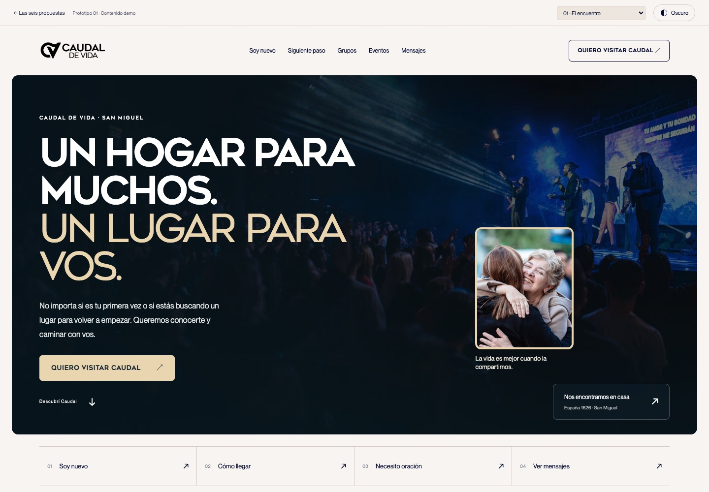
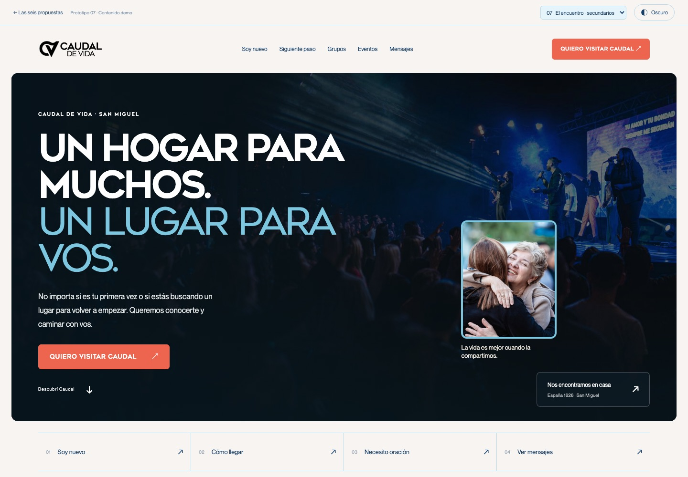

01El encuentroDirección principalPropuesta 01
El encuentro
Un hogar para muchos. Un lugar para vos.
Dirección principal · primarios del manual · azul #0152cdDemos
Siete versiones de la misma iglesia. El encuentro usa los colores principales. La 07 usa los secundarios.

01El encuentroDirección principalUn hogar para muchos. Un lugar para vos.
Dirección principal · primarios del manual · azul #0152cd 02Casa abierta
02Casa abiertaUna bienvenida que se siente en casa.
Manual · hueso, noche y coral secundario 03Vida para la Ciudad
03Vida para la CiudadLa fe toma forma en lo cotidiano.
Manual · azul secundario y azul primario 04Tu siguiente paso
04Tu siguiente pasoUn camino claro para cada persona.
Manual · azul primario, cielo y coral 05Esta semana en Caudal
05Esta semana en CaudalUna comunidad que sigue conectada.
Manual · azul secundario y cielo 06Un lugar para vosScroll experimental
06Un lugar para vosScroll experimentalUna invitación simple y memorable.
Manual · noche, azul primario y cielo
07El encuentro · secundariosSecundarios del manualLa misma escena, con la paleta secundaria.
Alternativa · azul 38/109/169, cielo 125/198/224, coral 238/101/79Fotografías de Caudal. La agenda es de muestra. Horarios y contactos se confirman antes de publicar.